☼
-
Home / Product / TLJ
Reimagining the customer and associate experience at a bakery.
-
Skills
UX Design
Product Design
Systems Thinking
UI Design -
Duration
Two weeks
Winter 2022 -
Tools
Figma
Figjam -
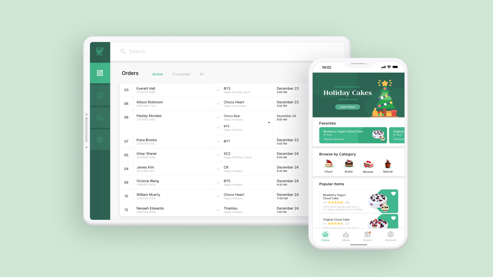


-
Tous les Jours is an international bakery and cafe chain based in South Korea. They are a cornerstone in many communities.
- 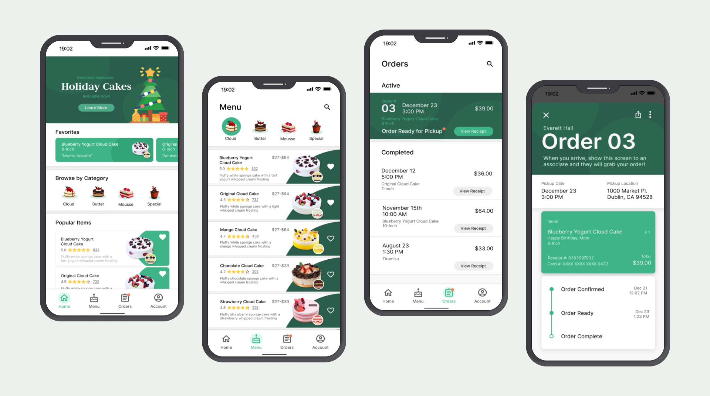
- 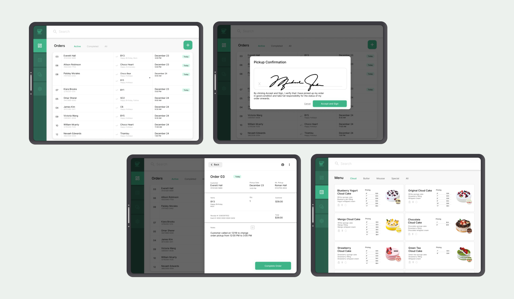
-
• Context
An antequated system can't serve a modernizing store.
-
Tous les Jours Dublin's reliance on a paper-based ordering system caused chaos with lost orders, customer confusion, and pandemonium during peak times. This exacerbated the growing gap in customer expectations for modern, mobile-based ordering, and also hindered security and verification for order pickups and tracking.
- 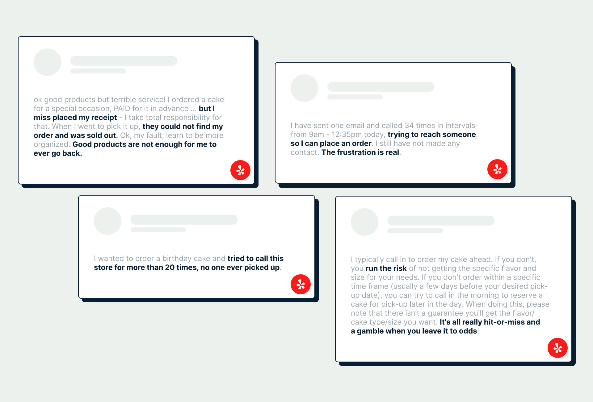
-
Customers excited to celebrate special occasions in their lives were paying the price of a disorganized system where they fell through the cracks. Others had resulted to rolling the dice of fate, because of poor documentation for how to actually place an order.
-
• Problem
An app isn't going to fix an entire failing system
-
The core issue that TLJ was facing wasn't necessarily that there wasn't a customer-facing order platform, but that their order tracking and fulfillment system was unable to keep up with volumne and could not respond to human error.
-
Considerations
-
This was a self-initiated project, so there were no hard-set rules or deadlines I had to keep in mind. These are considerations I set for myself to limit the project scope.
• A week deadline because I could work on this for months.
• Nothing revolutionary because the goal is to replace a broken system, not to launch a new product that changes the industry landscape of cake ordering.
• Not just an app because a bandaid solution doesn't address an infection, and systematic change is required to aleviate the burden on customers and employees.
- 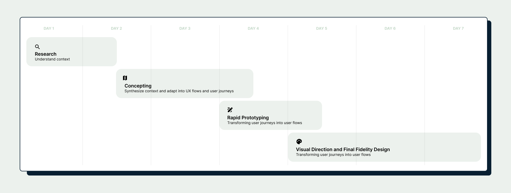
-
• Research
Understanding multiple user groups and how their different needs intersect.
-
Through a series of online research and informal interviews with customers, front-of-the-house employees, and back-of-the-house employees, I identified a series of converging needs that would determine the form of the final deliverables.
- 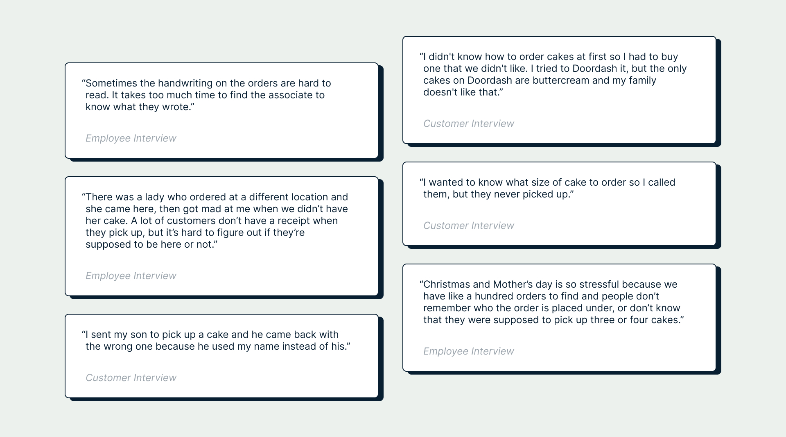
-
Personas
-
Using the findings from the user interviews, I created these personas to further flesh out each user group's desires. At this point, I also narrowed my scope to customers and associates and not include managers and bakers, as the former two groups have more pressing needs.
-

The Working Family-person
A busy professional responsible for keeping everyone in the family happy while balancing a full-time job.
Jobs-To-Be-Done
Place an order for a cake remotely and pick it up as fast as possible.
-

The Bumbling Teen
A proxy picking up a cake that they did not take part in ordering. Very confused and hopes they don't look awkward.
Jobs-To-Be-Done
Pick up a cake without making a fool of themself. Why can't Mom pick up Grandpa's cake herself if it's so important?
-

The Earnest Associate
A part-time bakery worker responsible for maintaining the store, ringing up customers, and fulfilling orders.
Jobs-To-Be-Done
Fulfill customer cake orders, take new cake orders, and convey cake information like allergens and prices to customers.
-
• Contextualizing
Fleshing out existing user group interactions, and identifying where pain points are congregating.
-
Given the findings from the research and personas, I created concept maps that would provide further understanding of how different user groups work together and where their needs intersect.
- 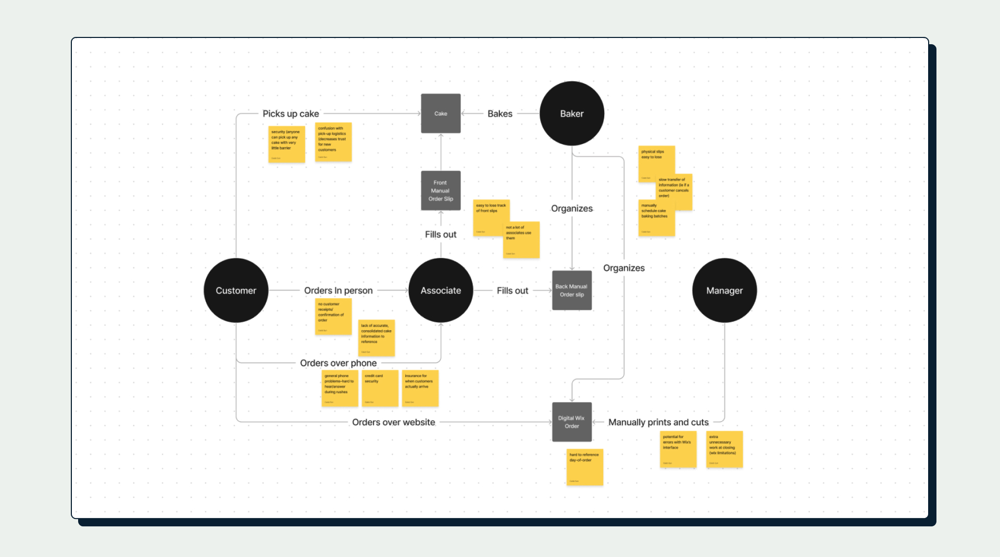
-
The concept map allowed me to identify three specific areas where pain points congregated:
• In-person ordering is inconvenient for customers with busy lives.
• Online and phone ordering isn't a wholistic solution because there are no transcripts or physical confirmations from the bakery's end.
• Cake pickup is confusing for customers without order slips, and hard to manage for associates at scale.
- 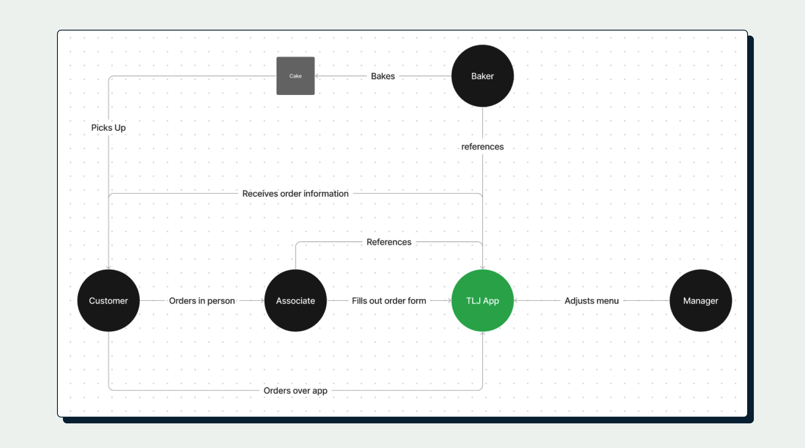
-
• Concepting
A pair of sister apps: one for customers, and one for employees
-
Taking inspiration from existing food-ordering services like Grubhub and Doordash, I split my solution into two applications, one geared towards customers and one geared towards employees.
-
Customer Mobile App
Mobile ordering, order tracking and sharing, secure payments, and customizability for return customers. Modeled after common food and cafe apps like Chipotle or Doordash. -
Associate Tablet App
Overview of all orders, in-store ordering support, order pick-up confirmation, menu information. A more practical tool for tracking and organizing without the fluff of a consumer-facing app. -
To begin, I created a site inventory to give a better idea of what screens I would prioritize when drafting. The low-fidelity sketches allowed for exploration in how to differentiate between the two similar but different apps. I chose a few key screens.
- 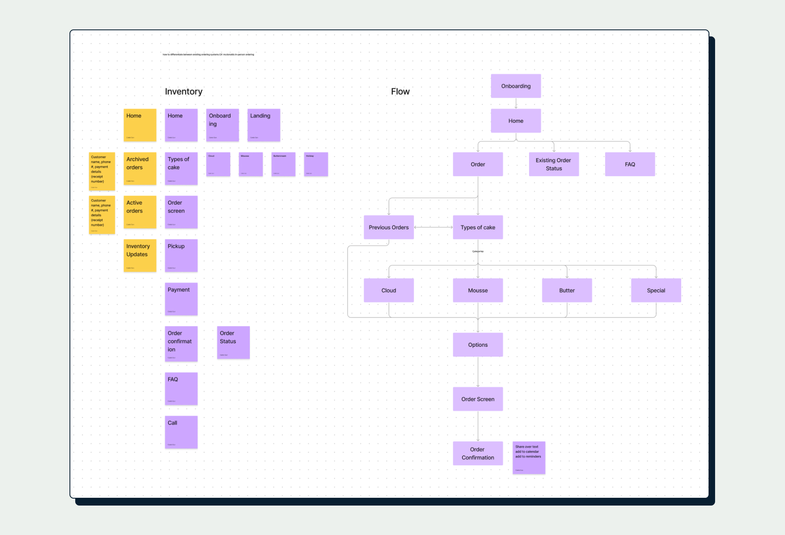 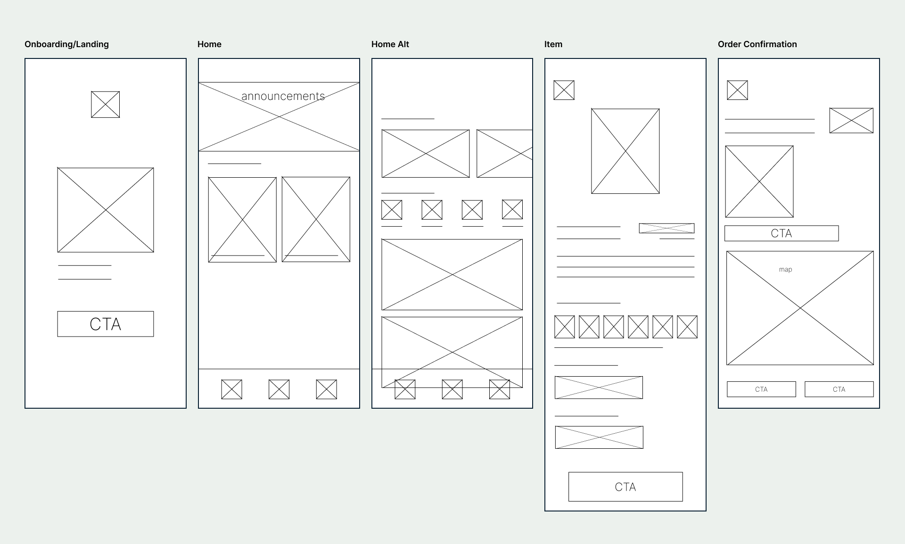 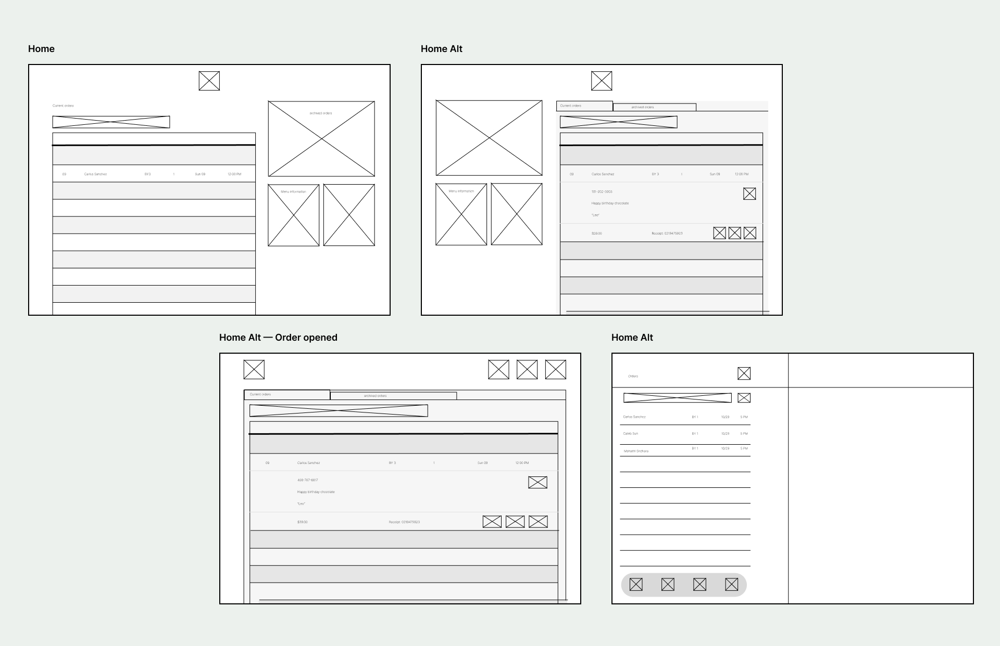
-
After the initial sketching, I refined and developed the wireframes to medium fidelity to flesh out some of the semantics of each screen.
-
 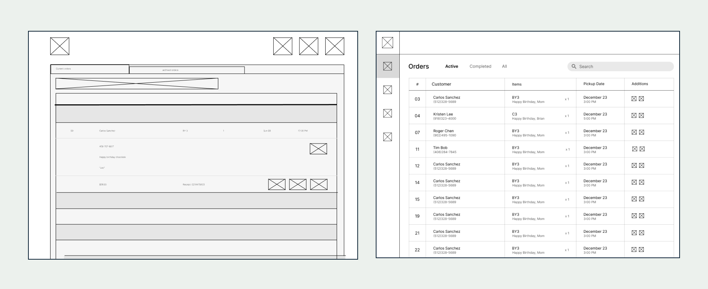
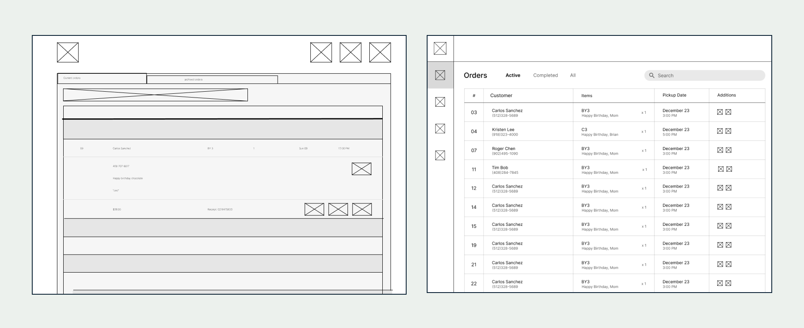
-
• Visual Guide
Establishing a style and component library.
-
A small challenge with the visual style of this project was how to combine the existing Tous Les Jours branding with the modernity that the app offers. I created a consistent style sheet and assets to add character to the app.
- 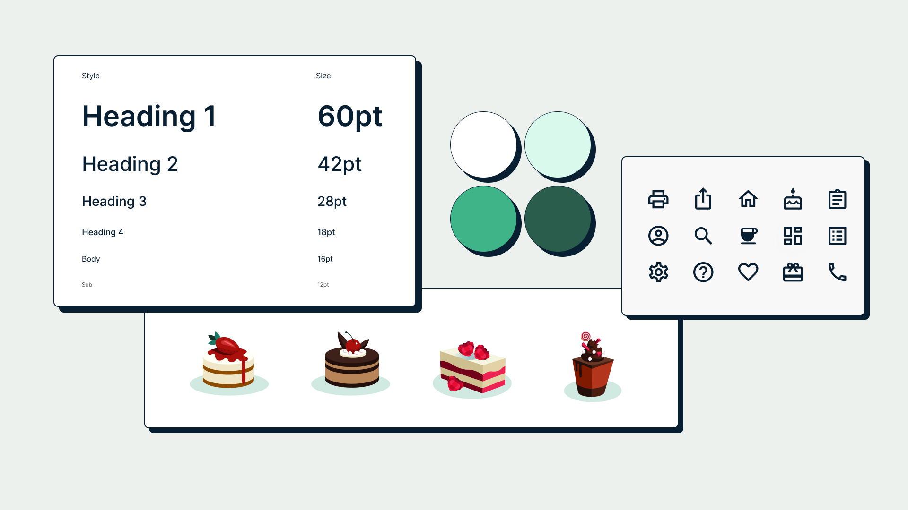
-
• Demo
Key features addressing user needs.
-
A small challenge with the visual style of this project was how to combine the existing Tous Les Jours branding with the modernity that the app offers. I created a consistent style sheet and assets to add character to the app.

Mobile Menu
Comprehensive and up-to-date mobile menu that reflects store-specific cake styles, prices, and flavors.
Online Ordering and Tracking
Secure online ordering without compromising on specificity. Order confirmation and tracking through pickup.


Associate View
Centralized spreadsheet-style database supporting in-store pickups and orders.